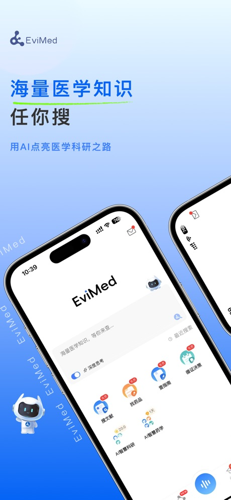
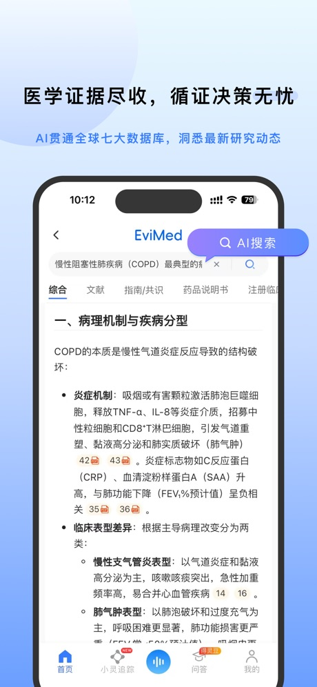

循证医学 AI 工具为什么非得做"带引用标注的回答"
EviMed 这类 AI 循证搜索背后的设计取舍：为什么回答每条都挂文献引用、输入偏结构化、免费额度却不做广告。从架构原理推导出它能做什么、不能做什么。
一个临床医生或药师在日常工作中最常见的场景是什么？不是写系统综述——那是科研阶段的事——而是一个具体到令人头疼的小问题：这个新诊断的糖尿病患者，糖化血红蛋白 7.2% 要不要起始胰岛素？这个抗生素用了三天患者没好转，要不要覆盖 MRSA？这类问题每天都会冒出来，传统做法是翻指南、查 PubMed、逐篇读摘要再自己拼出结论。有没有办法让 AI 直接给出能追溯的答案？
可以直接去 evimed官网 上看看它的产品定位——它就是沿着这个方向做的。但如果你用过通用大模型的聊天机器人查医学问题就知道，它们的回答偶尔会编、不给出处、同一句话换个问法就变味。EviMed 解决这个问题的思路不是"让模型更聪明"，而是在模型外面套了一整套循证医学专属的检索与合成管道——这才是它区别于普通医学 AI 聊天机器人的核心原理。
输入不是一句话，是一个"结构化问题"
通用 AI 聊天机器人的输入是纯自然语言，它的处理过程可以粗略理解为：把你的问题塞进 Transformer 序列，预测下一个 token，一路生成。这个过程不关心"你问的是干预措施还是诊断方法"、"研究对象是儿童还是成人"——它只关心语义相似度。
EviMed 的入口设计反其道而行之。首页正中央是一个大搜索框，下面直接列出了 PICOS、PICO、PICO-SD、SPIDER、JBI 循证等多种结构化模板入口——具体每个框架怎么用可以去evimed文档翻一下，都有详细示例。PICOS 是循证医学里标准的问题解构框架：Patient（研究对象）、Intervention（干预）、Comparison（对照）、Outcome（结局）、Setting（场景）。当你用 PICOS 框架输入"70 岁以上 2 型糖尿病患者（P）使用 GLP-1 受体激动剂（I）对比二甲双胍（C）的心血管结局（O）"时，EviMed 拿到的不是一段模糊的话，而是五个有明确语义边界的槽位。
这个槽位化输入的意义在于——后端的检索引擎可以按槽位精准触发不同的知识源。研究对象槽位触发流行病学与指南中的人群分层，干预槽位触发药品说明书与 RCT 数据库，结局槽位触发不良事件登记与 meta 分析结果。它不是一个统一的"查一下"，而是"根据问题的每个维度，分别去最合适的数据源取证据"。
回答不是一段文字，是"结论 + 分类证据列表 + 引用标注"
通用 AI 的输出形态是一段流畅的文字，读完了你也不知道这句话是从哪篇文献来的、有没有证据等级的差异。EviMed 的输出是结构化的：开头先给一个循证结论摘要，下面按证据类别分组展示，每条证据后面直接挂引用标注——点击标注能跳到原始文献的题录页面。
这个设计背后是对医学证据等级体系的硬编码。循证医学里证据等级从高到低大致是：系统综述/Meta 分析 > 随机对照试验（RCT）> 队列研究 > 病例对照 > 病例报告 > 专家意见。EviMed 的证据合成层在调用模型之前，会先把检索到的文献按证据等级排序、过滤掉低于阈值的条目，再把经过筛选的证据喂给模型做"总结与归纳"。模型在这里的角色不是"自由发挥写答案"，而是"对已经结构化好的证据做语言组织"。
换句话说，EviMed 里 AI 的权限被严格限制了——它不能凭空造数据，不能给没有文献支持的结论定量化表述，每个输出片段都必须能回溯到输入的证据池。模型是管道里的一环，而不是整条管道。
免费额度为什么不做广告？因为它的营收天花板不在流量而在"重度功能"
EviMed 免费使用，安装包从官方下载拿就行。搜文献和 AI 基础查证都有免费额度，但它没有像普通工具 App 那样在首页插广告、在搜索结果之间塞推广位。反过来，它的付费体系是「灵豆 + 三档超级会员」的重度功能路线——最低档超级会员月费 299 元，旗舰档月费已经到 2999 元，还有科研联合会员专门瞄准论文季需求。
这个定价逻辑值得想一下：循证医学工具的核心用户画像不是 C 端流量，而是有科研任务的临床医生、药师、医学研究员——他们的使用场景不是每天刷，而是"某个阶段集中高强度使用"：准备开题报告、做系统综述、赶论文 deadline。EviMed 的付费体系里，灵豆（按量消耗的点数）适合"偶尔出一份报告"的零散需求，科研联合会员覆盖学生和青年医生的月度高强度需求，三档超级会员瞄准机构级采购或个人重度科研。免费额度是质量门槛——让用户先用基础搜索建立信任，真正付费的是深度报告生成、科研雷达这类重计算、重人工维护的功能。
不做广告不是"良心发现"，而是商业模型决定的：一旦用户发现搜索结果里混了广告，这个"循证查证"的信任感就没了，也就没人愿意为后面的重度功能付费了。
这套管道的代价：什么场景它其实做不好
说了这么多原理，自然要问这套设计有什么局限。我在实际使用中注意到三个明显的边界。
第一，不能替代系统检索。EviMed 适合"我想知道这个问题大概的循证结论是什么"，但不适合"我要对某一领域做穷尽式检索"。传统文献数据库（PubMed、Embase）的布尔逻辑检索、MeSH 词表组配，是做系统评价时不可省略的步骤——AI 循证搜索是"快速查证"的补充，不是"完整检索"的替代品。
第二，数据源覆盖的盲区。它对英文文献的召回率和中文摘要质量尚可，但对于一些小众语种的临床研究、尚未被数据库索引的最新 preprint、以及药企未公开的真实世界数据，EviMed 同样查不到。
第三，结构化输入的学习成本。PICOS 框架本身是循证医学训练的一部分，有基础的医生上手快，但如果是刚接触的学生，可能反而觉得"还不如直接用自然语言问通用 AI 省事"。这时候 EviMed 的优势——精准性——在用户侧就变成了额外的门槛。
我的判断：谁该用、谁可以先用免费版
如果你的日常工作里有这类问题——"某个药品对某类患者人群的循证证据是什么"、"某两种干预措施在特定场景下的对比结论"、"指南最近更新了哪些与你相关的推荐"——EviMed 的 AI 循证搜索 + 引用标注的输出形态，比逐篇翻摘要高效得多。但如果你在做系统综述、写 Cochrane 风格的系统评价，还是得老老实实走文献库的全流程检索。
对于偶尔用一次的人，免费额度够你把"这个东西能不能帮我省时间"想清楚再决定要不要付费。对于论文季的医生或药学生，科研联合会员的月费比起在数据库里花的时间和精力，性价比很高——尤其是当你发现一个"我之前花了三个晚上翻出来的循证结论"，用结构化输入三分钟就拿到了带引用标注的答案时。
循证医学 AI 工具的设计原理，其实就是对"AI 能不能做医学"这个老问题的回答——不是让 AI 当医生，而是让 AI 当一个会按循证方法检索证据、能给你展示证据来源、不会随便编答案的高效助手。至于那个"为什么非得带引用标注"的问题，答案也很简单：在医学这个领域，能追溯比聪明更重要。顺便说一句，这套应用的整理资料我同步放在了GitHub、Gitee、GitCode 三个仓库，国内网络访问 Gitee 或 GitCode 会更顺畅。

